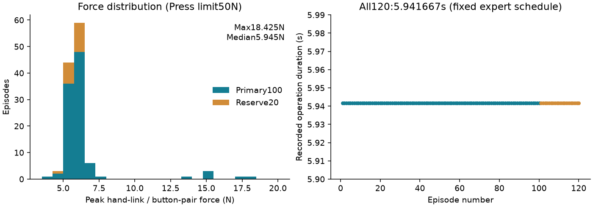

先交协调者与用户审议
- Press100 原始30Hz：任务、50N、状态有限、RGB/状态/动作实际30Hz、原始采集帧匹配及官方加载100/100闭合。完整碰撞、外部评测集成和人工终审未闭合。旧7.5Hz仅指下方历史V2。
- FR3 ClearL100 原始30Hz：任务/物体20mm、状态有限、实际30Hz、原始采集帧匹配与官方加载100/100。统一力63≤25N，37条保留等待导出政策；完整碰撞与外部集成仍待关闭。
这是条件审议包。没有数据集因本页更新而获得正式验收。
仍在补齐证据
- FR3 PP100：100个唯一源身份包含97条新Native记录及3条旧RAW离线见证。任务/物体20mm100条，统一力84≤25N、16条保留；CPU核验和标准归档继续补齐。相机采集已绑定，外部评测集成未闭合。
- FR3 PP250：旧100条统一力100≤25N，但旧RGB经过非因果时域处理，不可用于当前训练评测。当前4条原始回放任务成功但力均>25N。已批准四例固定腕资产诊断，未自动换生产模型。
V2 历史快照 · 下方画面与指标不代表当前原始RGB版本
保留原400条历史指标、首末帧和视频便于追溯。三个FR3旧包经非因果图像处理，不能用于当前SafeLab训练与评测；旧Press7.5Hz不能替代新版30Hz。当前状态以本页V3部分为准。
400V2 历史来源条数
4 × 100数据集与回合数
0正式验收 · 待用户终审
120 Hz物理与峰值力采样
当前待决事项
- 碰撞：全程/终止范围、允许接触及深度证据仍需协调者与用户明确，不以包围体重叠直接判失败。
- 数据导出：是否按论文领域使用力门槛，等用户决定；当前25N保持。
- Press：用户已决定30Hz，新100条原始版已闭合帧率；下方V2仍保留7.5Hz历史标签。
- 原始RGB：新采集禁用全部时域/色调后处理，外部评测集成仍需发布方验证。
- OOD、编码与HF公开时机待用户决定；HF仍私有、许可证CC BY4.0。
v1 新场景 · 离心机按钮 · 100条主数据 +20条储备
120条唯一技术候选已采集并按LeRobot v3归档。正式验收仍为0；完整碰撞、评测集成和用户终审尚未闭合。独立单环境生产不依赖N16对照。
封闭的简化实验小间，头部、腕部、侧面三路640×480视角。离心机静置后倾角0°；盖子关闭，因此转子被盖子遮挡。
任务成功2/2 · 50N检查通过2/2 · 操作约5.94秒。旧面板记录时长约36.8秒。原始RGB直接采集，图像、状态与动作约30Hz；测力逐物理步120Hz。原始六路无损视频已逐帧核对，解码帧与编码前像素哈希一致。下方为浏览用H.264压缩预览。
两条试采的实测结果；正式验收数保持为0| 样本 | 按钮任务 | F_peak | 动作时长 | 图像/测力 | 媒体检查 |
|---|
| 样本 1 | 通过 | 5.413 N ≤50 N | 5.942 s | 30 /120 Hz | 三路逐帧解码通过 |
| 样本 2 | 通过 | 6.332 N ≤50 N | 5.942 s | 30 /120 Hz | 三路逐帧解码通过 |
F_peak：全回合逐物理步，取所有“手部传感器连杆×按钮”接触力向量L2的最大值，不跨配对求和。50N按用户2026-11-05决定，较论文原阈值范围放宽。专家采用连续轨迹与触达保持，不改变按钮物理和原成功判据。
样本 1 · 头部
5.94 s · F_peak 5.41 N
样本 1 · 腕部
5.94 s · F_peak 5.41 N
样本 1 · 侧面
5.94 s · F_peak 5.41 N
样本 2 · 头部
5.94 s · F_peak 6.33 N
样本 2 · 腕部
5.94 s · F_peak 6.33 N
样本 2 · 侧面
5.94 s · F_peak 6.33 N
100条主集已采齐 · 8组不同初始条件，三路视频
从主集选择8条不同位置的回合，包含力峰最高、最低及多组偏移。每条头部、腕部、侧面可并排查看。浏览视频经过H.264有损压缩；源数据保持无后处理的无损RGB。头部光心沿机器人前方前移73.3mm，离心机盖子关闭。
已通过：原任务成功、50N配对力门槛、有限状态、30Hz RGB/状态、120Hz测力、源采集张量与无损视频像素一致。待闭合：完整碰撞有效性口径及报告覆盖、新共享评测器策略输入张量集成、OOD口径与用户终审。画面证明的范围不会扩展为尚未完成的评测集成。

全部120条的分布；主集100和储备20分开着色。实测最大18.425N，安全门槛仍为50N。时长一致来自冻结专家时序。
主集 015 · 初始偏移 X +4.862 / Y -2.014 mm
任务成功 · F_peak 6.296 N ≤50 N · 动作 5.942 s
主集 015 · 头部
30 Hz · 0.13 MB · H.264浏览预览
主集 015 · 腕部
30 Hz · 0.45 MB · H.264浏览预览
主集 015 · 侧面
30 Hz · 0.11 MB · H.264浏览预览
主集 020 · 初始偏移 X +4.738 / Y +3.664 mm
任务成功 · F_peak 14.801 N ≤50 N · 动作 5.942 s
主集 020 · 头部
30 Hz · 0.13 MB · H.264浏览预览
主集 020 · 腕部
30 Hz · 0.45 MB · H.264浏览预览
主集 020 · 侧面
30 Hz · 0.11 MB · H.264浏览预览
主集 026 · 初始偏移 X +1.042 / Y +1.505 mm
任务成功 · F_peak 5.867 N ≤50 N · 动作 5.942 s
主集 026 · 头部
30 Hz · 0.13 MB · H.264浏览预览
主集 026 · 腕部
30 Hz · 0.44 MB · H.264浏览预览
主集 026 · 侧面
30 Hz · 0.11 MB · H.264浏览预览
主集 036 · 初始偏移 X -2.107 / Y -0.092 mm
任务成功 · F_peak 6.411 N ≤50 N · 动作 5.942 s
主集 036 · 头部
30 Hz · 0.12 MB · H.264浏览预览
主集 036 · 腕部
30 Hz · 0.44 MB · H.264浏览预览
主集 036 · 侧面
30 Hz · 0.11 MB · H.264浏览预览
主集 060 · 初始偏移 X +3.722 / Y +3.370 mm
任务成功 · F_peak 14.774 N ≤50 N · 动作 5.942 s
主集 060 · 头部
30 Hz · 0.13 MB · H.264浏览预览
主集 060 · 腕部
30 Hz · 0.45 MB · H.264浏览预览
主集 060 · 侧面
30 Hz · 0.11 MB · H.264浏览预览
主集 076 · 初始偏移 X -1.238 / Y +3.976 mm
任务成功 · F_peak 18.425 N ≤50 N · 动作 5.942 s
主集 076 · 头部
30 Hz · 0.13 MB · H.264浏览预览
主集 076 · 腕部
30 Hz · 0.46 MB · H.264浏览预览
主集 076 · 侧面
30 Hz · 0.11 MB · H.264浏览预览
主集 098 · 初始偏移 X -4.195 / Y +3.556 mm
任务成功 · F_peak 4.071 N ≤50 N · 动作 5.942 s
主集 098 · 头部
30 Hz · 0.12 MB · H.264浏览预览
主集 098 · 腕部
30 Hz · 0.45 MB · H.264浏览预览
主集 098 · 侧面
30 Hz · 0.11 MB · H.264浏览预览
主集 099 · 初始偏移 X +4.971 / Y +3.912 mm
任务成功 · F_peak 17.005 N ≤50 N · 动作 5.942 s
主集 099 · 头部
30 Hz · 0.12 MB · H.264浏览预览
主集 099 · 腕部
30 Hz · 0.45 MB · H.264浏览预览
主集 099 · 侧面
30 Hz · 0.11 MB · H.264浏览预览
下载8组样本的脱敏指标与视频索引
120条归档完成 · 技术候选，尚非正式验收
100条主数据 +20条储备，120/120原生任务成功、120/120通过50N、状态有限、时钟和源像素核验。种子、初始偏移、动作和RGB内容均已去重。F_peak最小4.071N、中位5.945N、p90为6.586N、最大18.425N；全部实际≤20N只是实测描述，合同仍为50N。
动作均为5.942秒；三路RGB与状态/动作30Hz，配对测力120Hz。LeRobot v3共21,360帧，1,569个清单文件约8.56GB；从实际数据桶使用官方LeRobot0.4.3加载、各条三路首尾帧读取均通过，逐文件大小与清单一致。已交付首16条及完整120条训练接口，状态13维、末端位姿7维、目标位置3维；这不代表模型训练或评测已通过。
视觉抽帧：119条由Astra medium完成，均未见可见阻断；第62条请求结果未知，未重复发送，已另作独立抽帧检查。抽帧不能证明连续过程、安全或用户终审。上方8组视频为主集的不同初始条件；最初两条试采视频也保留，均仅供浏览与语义复核。
碰撞证据限制：120条逐物理步时间轴与已记录配对覆盖核验完成，但报告阈值为1N，不能排除阈值以下的轻微接触；指定支撑面映射与碰撞世界穷尽性尚未认证。完整碰撞判据待定，未据零读数放行或拒收。N16腕部/侧面对照仍未通过，本批使用每进程1环境。
查看120条逐条技术指标（编号1–100主数据，101–120储备）
技术指标通过不等于正式验收；完整碰撞尚未判定| 编号 | 用途 | F_peak | 动作时长 | 任务/50N | 有限/时钟 | 源像素 | 完整碰撞 |
|---|
| 1 | 主数据 | 5.413 N | 5.942 s | 通过 | 通过 | 通过 | 待判定 |
| 2 | 主数据 | 6.332 N | 5.942 s | 通过 | 通过 | 通过 | 待判定 |
| 3 | 主数据 | 6.283 N | 5.942 s | 通过 | 通过 | 通过 | 待判定 |
| 4 | 主数据 | 5.578 N | 5.942 s | 通过 | 通过 | 通过 | 待判定 |
| 5 | 主数据 | 5.685 N | 5.942 s | 通过 | 通过 | 通过 | 待判定 |
| 6 | 主数据 | 6.294 N | 5.942 s | 通过 | 通过 | 通过 | 待判定 |
| 7 | 主数据 | 5.718 N | 5.942 s | 通过 | 通过 | 通过 | 待判定 |
| 8 | 主数据 | 15.321 N | 5.942 s | 通过 | 通过 | 通过 | 待判定 |
| 9 | 主数据 | 5.698 N | 5.942 s | 通过 | 通过 | 通过 | 待判定 |
| 10 | 主数据 | 6.445 N | 5.942 s | 通过 | 通过 | 通过 | 待判定 |
| 11 | 主数据 | 5.795 N | 5.942 s | 通过 | 通过 | 通过 | 待判定 |
| 12 | 主数据 | 5.843 N | 5.942 s | 通过 | 通过 | 通过 | 待判定 |
| 13 | 主数据 | 6.189 N | 5.942 s | 通过 | 通过 | 通过 | 待判定 |
| 14 | 主数据 | 6.132 N | 5.942 s | 通过 | 通过 | 通过 | 待判定 |
| 15 | 主数据 | 6.296 N | 5.942 s | 通过 | 通过 | 通过 | 待判定 |
| 16 | 主数据 | 6.408 N | 5.942 s | 通过 | 通过 | 通过 | 待判定 |
| 17 | 主数据 | 6.292 N | 5.942 s | 通过 | 通过 | 通过 | 待判定 |
| 18 | 主数据 | 6.110 N | 5.942 s | 通过 | 通过 | 通过 | 待判定 |
| 19 | 主数据 | 5.650 N | 5.942 s | 通过 | 通过 | 通过 | 待判定 |
| 20 | 主数据 | 14.801 N | 5.942 s | 通过 | 通过 | 通过 | 待判定 |
| 21 | 主数据 | 5.906 N | 5.942 s | 通过 | 通过 | 通过 | 待判定 |
| 22 | 主数据 | 6.274 N | 5.942 s | 通过 | 通过 | 通过 | 待判定 |
| 23 | 主数据 | 5.384 N | 5.942 s | 通过 | 通过 | 通过 | 待判定 |
| 24 | 主数据 | 6.116 N | 5.942 s | 通过 | 通过 | 通过 | 待判定 |
| 25 | 主数据 | 5.505 N | 5.942 s | 通过 | 通过 | 通过 | 待判定 |
| 26 | 主数据 | 5.867 N | 5.942 s | 通过 | 通过 | 通过 | 待判定 |
| 27 | 主数据 | 5.694 N | 5.942 s | 通过 | 通过 | 通过 | 待判定 |
| 28 | 主数据 | 6.191 N | 5.942 s | 通过 | 通过 | 通过 | 待判定 |
| 29 | 主数据 | 6.388 N | 5.942 s | 通过 | 通过 | 通过 | 待判定 |
| 30 | 主数据 | 6.153 N | 5.942 s | 通过 | 通过 | 通过 | 待判定 |
| 31 | 主数据 | 6.704 N | 5.942 s | 通过 | 通过 | 通过 | 待判定 |
| 32 | 主数据 | 7.753 N | 5.942 s | 通过 | 通过 | 通过 | 待判定 |
| 33 | 主数据 | 5.491 N | 5.942 s | 通过 | 通过 | 通过 | 待判定 |
| 34 | 主数据 | 6.630 N | 5.942 s | 通过 | 通过 | 通过 | 待判定 |
| 35 | 主数据 | 6.102 N | 5.942 s | 通过 | 通过 | 通过 | 待判定 |
| 36 | 主数据 | 6.411 N | 5.942 s | 通过 | 通过 | 通过 | 待判定 |
| 37 | 主数据 | 5.439 N | 5.942 s | 通过 | 通过 | 通过 | 待判定 |
| 38 | 主数据 | 6.358 N | 5.942 s | 通过 | 通过 | 通过 | 待判定 |
| 39 | 主数据 | 6.311 N | 5.942 s | 通过 | 通过 | 通过 | 待判定 |
| 40 | 主数据 | 6.221 N | 5.942 s | 通过 | 通过 | 通过 | 待判定 |
| 41 | 主数据 | 4.592 N | 5.942 s | 通过 | 通过 | 通过 | 待判定 |
| 42 | 主数据 | 5.726 N | 5.942 s | 通过 | 通过 | 通过 | 待判定 |
| 43 | 主数据 | 5.436 N | 5.942 s | 通过 | 通过 | 通过 | 待判定 |
| 44 | 主数据 | 5.731 N | 5.942 s | 通过 | 通过 | 通过 | 待判定 |
| 45 | 主数据 | 5.666 N | 5.942 s | 通过 | 通过 | 通过 | 待判定 |
| 46 | 主数据 | 6.478 N | 5.942 s | 通过 | 通过 | 通过 | 待判定 |
| 47 | 主数据 | 5.710 N | 5.942 s | 通过 | 通过 | 通过 | 待判定 |
| 48 | 主数据 | 5.699 N | 5.942 s | 通过 | 通过 | 通过 | 待判定 |
| 49 | 主数据 | 5.718 N | 5.942 s | 通过 | 通过 | 通过 | 待判定 |
| 50 | 主数据 | 5.726 N | 5.942 s | 通过 | 通过 | 通过 | 待判定 |
| 51 | 主数据 | 5.761 N | 5.942 s | 通过 | 通过 | 通过 | 待判定 |
| 52 | 主数据 | 6.286 N | 5.942 s | 通过 | 通过 | 通过 | 待判定 |
| 53 | 主数据 | 5.662 N | 5.942 s | 通过 | 通过 | 通过 | 待判定 |
| 54 | 主数据 | 5.662 N | 5.942 s | 通过 | 通过 | 通过 | 待判定 |
| 55 | 主数据 | 5.643 N | 5.942 s | 通过 | 通过 | 通过 | 待判定 |
| 56 | 主数据 | 5.586 N | 5.942 s | 通过 | 通过 | 通过 | 待判定 |
| 57 | 主数据 | 5.710 N | 5.942 s | 通过 | 通过 | 通过 | 待判定 |
| 58 | 主数据 | 5.715 N | 5.942 s | 通过 | 通过 | 通过 | 待判定 |
| 59 | 主数据 | 5.656 N | 5.942 s | 通过 | 通过 | 通过 | 待判定 |
| 60 | 主数据 | 14.774 N | 5.942 s | 通过 | 通过 | 通过 | 待判定 |
| 61 | 主数据 | 5.669 N | 5.942 s | 通过 | 通过 | 通过 | 待判定 |
| 62 | 主数据 | 5.644 N | 5.942 s | 通过 | 通过 | 通过 | 待判定 |
| 63 | 主数据 | 5.926 N | 5.942 s | 通过 | 通过 | 通过 | 待判定 |
| 64 | 主数据 | 6.163 N | 5.942 s | 通过 | 通过 | 通过 | 待判定 |
| 65 | 主数据 | 6.335 N | 5.942 s | 通过 | 通过 | 通过 | 待判定 |
| 66 | 主数据 | 5.669 N | 5.942 s | 通过 | 通过 | 通过 | 待判定 |
| 67 | 主数据 | 6.687 N | 5.942 s | 通过 | 通过 | 通过 | 待判定 |
| 68 | 主数据 | 6.318 N | 5.942 s | 通过 | 通过 | 通过 | 待判定 |
| 69 | 主数据 | 6.370 N | 5.942 s | 通过 | 通过 | 通过 | 待判定 |
| 70 | 主数据 | 5.671 N | 5.942 s | 通过 | 通过 | 通过 | 待判定 |
| 71 | 主数据 | 6.222 N | 5.942 s | 通过 | 通过 | 通过 | 待判定 |
| 72 | 主数据 | 6.581 N | 5.942 s | 通过 | 通过 | 通过 | 待判定 |
| 73 | 主数据 | 5.901 N | 5.942 s | 通过 | 通过 | 通过 | 待判定 |
| 74 | 主数据 | 5.965 N | 5.942 s | 通过 | 通过 | 通过 | 待判定 |
| 75 | 主数据 | 5.452 N | 5.942 s | 通过 | 通过 | 通过 | 待判定 |
| 76 | 主数据 | 18.425 N | 5.942 s | 通过 | 通过 | 通过 | 待判定 |
| 77 | 主数据 | 13.880 N | 5.942 s | 通过 | 通过 | 通过 | 待判定 |
| 78 | 主数据 | 5.692 N | 5.942 s | 通过 | 通过 | 通过 | 待判定 |
| 79 | 主数据 | 5.701 N | 5.942 s | 通过 | 通过 | 通过 | 待判定 |
| 80 | 主数据 | 5.835 N | 5.942 s | 通过 | 通过 | 通过 | 待判定 |
| 81 | 主数据 | 6.833 N | 5.942 s | 通过 | 通过 | 通过 | 待判定 |
| 82 | 主数据 | 6.268 N | 5.942 s | 通过 | 通过 | 通过 | 待判定 |
| 83 | 主数据 | 6.143 N | 5.942 s | 通过 | 通过 | 通过 | 待判定 |
| 84 | 主数据 | 6.198 N | 5.942 s | 通过 | 通过 | 通过 | 待判定 |
| 85 | 主数据 | 6.342 N | 5.942 s | 通过 | 通过 | 通过 | 待判定 |
| 86 | 主数据 | 5.575 N | 5.942 s | 通过 | 通过 | 通过 | 待判定 |
| 87 | 主数据 | 6.153 N | 5.942 s | 通过 | 通过 | 通过 | 待判定 |
| 88 | 主数据 | 5.690 N | 5.942 s | 通过 | 通过 | 通过 | 待判定 |
| 89 | 主数据 | 6.452 N | 5.942 s | 通过 | 通过 | 通过 | 待判定 |
| 90 | 主数据 | 5.979 N | 5.942 s | 通过 | 通过 | 通过 | 待判定 |
| 91 | 主数据 | 5.761 N | 5.942 s | 通过 | 通过 | 通过 | 待判定 |
| 92 | 主数据 | 6.304 N | 5.942 s | 通过 | 通过 | 通过 | 待判定 |
| 93 | 主数据 | 4.758 N | 5.942 s | 通过 | 通过 | 通过 | 待判定 |
| 94 | 主数据 | 6.673 N | 5.942 s | 通过 | 通过 | 通过 | 待判定 |
| 95 | 主数据 | 6.409 N | 5.942 s | 通过 | 通过 | 通过 | 待判定 |
| 96 | 主数据 | 5.612 N | 5.942 s | 通过 | 通过 | 通过 | 待判定 |
| 97 | 主数据 | 5.785 N | 5.942 s | 通过 | 通过 | 通过 | 待判定 |
| 98 | 主数据 | 4.071 N | 5.942 s | 通过 | 通过 | 通过 | 待判定 |
| 99 | 主数据 | 17.005 N | 5.942 s | 通过 | 通过 | 通过 | 待判定 |
| 100 | 主数据 | 6.362 N | 5.942 s | 通过 | 通过 | 通过 | 待判定 |
| 101 | 储备 | 5.888 N | 5.942 s | 通过 | 通过 | 通过 | 待判定 |
| 102 | 储备 | 5.678 N | 5.942 s | 通过 | 通过 | 通过 | 待判定 |
| 103 | 储备 | 6.256 N | 5.942 s | 通过 | 通过 | 通过 | 待判定 |
| 104 | 储备 | 6.051 N | 5.942 s | 通过 | 通过 | 通过 | 待判定 |
| 105 | 储备 | 6.149 N | 5.942 s | 通过 | 通过 | 通过 | 待判定 |
| 106 | 储备 | 6.286 N | 5.942 s | 通过 | 通过 | 通过 | 待判定 |
| 107 | 储备 | 4.815 N | 5.942 s | 通过 | 通过 | 通过 | 待判定 |
| 108 | 储备 | 5.450 N | 5.942 s | 通过 | 通过 | 通过 | 待判定 |
| 109 | 储备 | 6.123 N | 5.942 s | 通过 | 通过 | 通过 | 待判定 |
| 110 | 储备 | 6.370 N | 5.942 s | 通过 | 通过 | 通过 | 待判定 |
| 111 | 储备 | 6.320 N | 5.942 s | 通过 | 通过 | 通过 | 待判定 |
| 112 | 储备 | 5.628 N | 5.942 s | 通过 | 通过 | 通过 | 待判定 |
| 113 | 储备 | 6.388 N | 5.942 s | 通过 | 通过 | 通过 | 待判定 |
| 114 | 储备 | 5.724 N | 5.942 s | 通过 | 通过 | 通过 | 待判定 |
| 115 | 储备 | 5.697 N | 5.942 s | 通过 | 通过 | 通过 | 待判定 |
| 116 | 储备 | 5.592 N | 5.942 s | 通过 | 通过 | 通过 | 待判定 |
| 117 | 储备 | 6.459 N | 5.942 s | 通过 | 通过 | 通过 | 待判定 |
| 118 | 储备 | 5.784 N | 5.942 s | 通过 | 通过 | 通过 | 待判定 |
| 119 | 储备 | 5.613 N | 5.942 s | 通过 | 通过 | 通过 | 待判定 |
| 120 | 储备 | 5.691 N | 5.942 s | 通过 | 通过 | 通过 | 待判定 |
下载120条逐条技术指标与检查范围
量产前的8条件稳定性验证
同一冻结控制与场景，8个不同seed和初始物体偏移的回合均通过原任务成功判据和50N。峰值5.58–15.32N，动作均约5.942秒；图像/状态30Hz、测力120Hz和三路源像素哈希均已核验。配置仅验证独立的单环境进程；尚不能声称同进程N16或全部D.4验收通过。
上方视频仍来自最初两条样本，供查看视角与速度；下表是随后8条不同条件。较早原型曾有197.99N、241.56N超限，当前版本修正了触达保持与抬手的衔接。试验偏移限于X±5mm、Y±4mm，不构成OOD泛化验收。用户已授权独立N1生产；以下8条件是量产前的验证记录，不构成OOD泛化验收。
后续8条件稳定性实测| 条件 | 初始X/Y偏移mm | F_peak | 动作时长 | 任务与50N |
|---|
| 1 | -5.0 / -4.0 | 6.283 N | 5.942 s | 成功 · ≤50N |
| 2 | -3.0 / -2.0 | 5.578 N | 5.942 s | 成功 · ≤50N |
| 3 | -1.0 / +2.0 | 5.685 N | 5.942 s | 成功 · ≤50N |
| 4 | +1.0 / -2.0 | 6.294 N | 5.942 s | 成功 · ≤50N |
| 5 | +3.0 / +2.0 | 5.718 N | 5.942 s | 成功 · ≤50N |
| 6 | +5.0 / +4.0 | 15.321 N | 5.942 s | 成功 · ≤50N |
| 7 | -4.0 / +4.0 | 5.698 N | 5.942 s | 成功 · ≤50N |
| 8 | +4.0 / -4.0 | 6.445 N | 5.942 s | 成功 · ≤50N |
16环境对照：按噪声底比较，腕部与侧面未通过
协调者已将“最大差≤1”改为：对照的99.9分位差与平均差都不超过同seed N1复测的两倍。最大差仅作参考。下表来自后续同进程重绘诊断，每格依次为最大差 / 99.9分位差 / 平均差，单位均为8bit RGB通道值。初次试采的两组跨进程复测也未通过新判据。
| 视角 | N1噪声底 | N1对N16环境0 | 邻居开灯对关灯 |
|---|
| 头部 | 66 / 8.0 / 0.191 | 104 / 13.0 / 0.319 · 通过 | 80 / 10.0 / 0.268 · 通过 |
|---|
| 腕部 | 48 / 8.0 / 0.226 | 136 / 74.0 / 2.456 · 未通过 | 64 / 23.0 / 0.872 · 未通过 |
|---|
| 侧面 | 55 / 7.0 / 0.217 | 116 / 56.0 / 1.961 · 未通过 | 104 / 47.0 / 1.082 · 未通过 |
|---|
 原始帧的绝对差异，未做图像修正。差异延伸到墙面、台面和手臂表面，不能全部归为孤立的边缘噪声；是否为漏光尚未证实。
原始帧的绝对差异，未做图像修正。差异延伸到墙面、台面和手臂表面，不能全部归为孤立的边缘噪声；是否为漏光尚未证实。
场景源配置包含6cm厚的双面实体墙和屋顶，每间4盏顶灯、1个全局环境光配置；自动曝光开关的实测读回为关闭。阴影在渲染配置中开启，实际逐灯遮挡仍待定位。
渲染帧率新/旧参考比为0.987、0.792，第二组未达到0.90。新场景两次为12.43/12.76FPS，旧参考为12.59/16.10FPS；原记录没有逐相机计时，瓶颈尚未定位。完整碰撞口径、新评测任务集成及用户终审仍待完成。N16未通过不阻塞独立N1采集；正式验收数保持0。
下方400条为旧设置历史留档；FR3三组的新设置各两条小样见下方，尚未获准量产；新版离心机按钮已完成120条技术候选归档。这里没有修改PsiBot桌面抓取、取放的数据或其他评测环境。
下载试采和稳定性公开指标
FR3 v1 · 三个任务，各两条新设置小样
封闭小间、三路640×480原始画面和新速度；仅供用户审核视角与动作。尚未量产100条，正式验收仍为0。
取放约9.9秒，抓取抬起约5.9秒；两指驱动力上限12N。透明大试剂瓶的小样给专家抬升轨迹增加5mm余量，原物体目标和20mm门槛不变。F_peak沿用逐120Hz物理步、手部连杆×目标物体配对力L2最大值，25N；终点检查使用物体位置残差，20mm。
这些小样已通过：任务完成、25N、物体20mm、有限状态、30Hz时钟、当前采集相机张量与写入原始帧一致。尚待闭合：完整碰撞有效性口径与覆盖、共享评测器策略输入集成、用户小样确认。选出的两条不能代表总体成功率或OOD泛化。
head为机器人后上方固定相机；wrist随实际手部连杆运动；side为固定侧面。录制源不做时间中值、EMA或颜色后处理；网页视频仅做H.264压缩。头部和腕部画面中仍有机械臂或夹指的局部遮挡；这些小样供用户检查遮挡是否可接受，不宣称视角已获终审。没有改动PsiBot桌面抓取或取放的相机与评测环境。
下载小样公开指标
FR3 · 下一批烧杯抓取，各两条小样
100 mL 和250 mL 烧杯抓取抬起，每种两条；封闭小间、后上方固定＋腕部＋侧面三路。仅供用户审核，尚未量产100条，正式验收仍为0。
沿用已验证的接近和闭合段，再用平滑专家抬升到原配置目标，动作约5.9秒。夹爪上限12N、力门槛25N、物体终点20mm均未改。RGB/状态30Hz，物理和手部连杆×目标配对力120Hz。原始画面不做时间中值、EMA或颜色后处理；标准LeRobot v3归档采用逐像素核验的无损编码，本页为有损浏览预览。
已检查：原任务成功、25N、物体20mm、有限状态、实际120Hz/30Hz时钟、全部视频解码和官方LeRobot读取。待闭合：碰撞口径和完整几何证据、外部评测策略相机输入集成、用户小样认可。只有两条，不能估计总体成功率或OOD。
头部视角有机械臂局部遮挡，腕部画面的上方被手部壳体遮挡；接近与抬升阶段仍能看到目标，遮挡是否可接受待用户确认。原始记录完成后，最终元数据写入因缺少版本字段而报错；四条已按原始文件校验和在CPU恢复元数据，未重跑物理，原异常保留。
四条小样公开指标
正在读取 400 条检查记录…